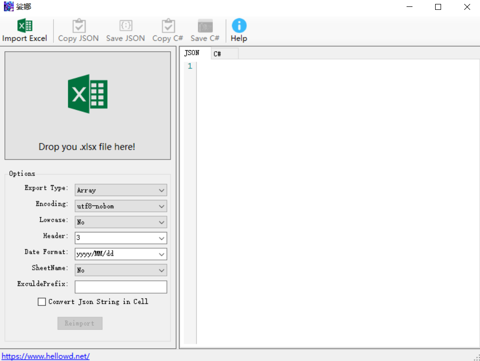
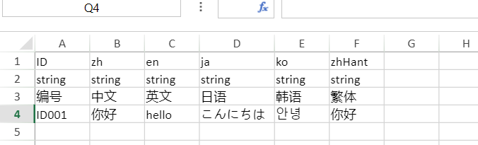

娑娜
在游戏项目中一般都需要由策划制作大量的游戏内容，其中很大一部分是使用Excel表来制作的。于是程序就需要把Excel文件转换成程序方便读取的格式。
之前项目使用的Excel表导入工具都是通过Office Excel组件来实现数据访问的，效率十分令人不满。一个端游项目一般要上百个表格，手游项目20、30个表格基本也是要的，于是表格导入程序的过程一般要几分钟，项目后期要接近半个小时。这里分享的这个小工具，在速度上有质的飞越，比上述方法实现的工具有接近100倍的速度提升.
版本更新
- 最新版： 1.0.1
- 更新日期：2021年5月4日
主要功能：
- 支持读取 Excel 97-2003的 .xls格式和2007的 .xlsx格式；
- 支持多个表单导出；
- 把Excel表单转换成Json对象，并保存到一个文本文件中。支持将表中内容转换成Array，或者以第一列为ID的字典对象；
- 将表头信息生成 C# 结构体定义代码；
- 进阶特性
- 通过特定的前缀排除掉表单或者列
- 自动识别和转换单元格内的 Json 格式字符串，并转换成为 Json Array 或者 Json Object
支持GUI模式和命令行模式
GUI模式方便预览；而命令行式，方便将多个表格转换工作写成一个批处理文件（.bat或者.sh），一键处理几十个表格。 例如，使用下面这个.bat批处理文件，可以一次性转换”.\excel”目录下所有的.xlsx文件到”.\json”目录：
@SET EXCEL_FOLDER=.\excel
@SET JSON_FOLDER=.\json
@SET EXE=.\excel2json.exe
@ECHO Converting excel files in folder %EXCEL_FOLDER% ...
for /f "delims=" %%i in ('dir /b /a-d /s %EXCEL_FOLDER%\*.xlsx') do (
@echo processing %%~nxi
@CALL %EXE% --excel %EXCEL_FOLDER%\%%~nxi --json %JSON_FOLDER%\%%~ni.json --header 3
)


命令行参数
- -e, –excel Required. 输入的Excel文件路径.
- -j, –json 指定输出的json文件路径.
- -p, –csharp 指定输出的C#文件路径.
- -h, –header (Default: 3)表格中有几行是表头.
- -c, –encoding (Default: utf8-nobom) 指定编码的名称.
- -l, –lowcase (Default: false) 自动把字段名称转换成小写格式.
- -a 序列化成数组
- -d, –date:指定日期格式化字符串，例如：dd / MM / yyy hh: mm:ss
- -s 序列化时强制带上sheet name，即使只有一个sheet
- -exclude_prefix： 导出时，排除掉包含指定前缀的表单和列，例如：-exclude_prefix #
- -cell_json：自动识别单元格中的Json对象和Json数组，Default：false
例如：excel2json –excel test.xlsx –json test.json –header 3 –array true，其中的输入和输出文件，都在当前目录下；
Excel表单格式约定

- 第一行固定作为列名（用来构造json字段名称）；
- 第一列固定作为对象的ID；
- 读取Excel Workbook中的第一个sheet；
- 对于SQL导出模式：第二行固定为字段类型
- 使用表头生成C#数据定义代码